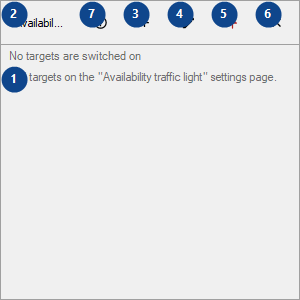
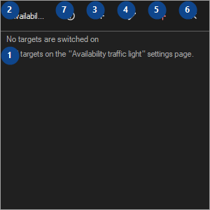

Availability traffic light
What this is for
A board of tiles for your hosts, sites, folders and drives; checks run while CyrFlip runs, results stay in memory.


In this order
Read the numbered elements, choose the values you need, then use the window’s command to continue.
The elements
1. Availability traffic light
Choose or enter the value for the adjacent label. Review it before continuing.
Your shortcuts2. Availability traffic light
Choose or enter the value for the adjacent label. Review it before continuing.
Your shortcuts3. Add a target..
Use this command when you need the action named above. Review any confirmation before accepting it.
Your shortcuts4. Edit targets..
Use this command when you need the action named above. Review any confirmation before accepting it.
Your shortcuts5. Always on top
Use this command when you need the action named above. Review any confirmation before accepting it.
Your shortcuts6. Hide
Use this command when you need the action named above. Review any confirmation before accepting it.
Your shortcuts7. Help (F1)
Use this command when you need the action named above. Review any confirmation before accepting it.
Your shortcuts